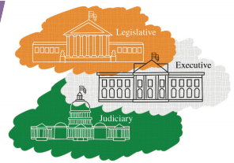
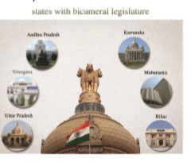
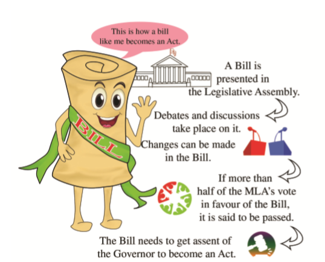

CIVICS

Students acquire knowledge in
1. The State executive.
2. Powers and functions of the Governor.
3. Powers and functions of the Chief Minister.
4. Legislative Assembly and Council.
5. State Judiciary.
There are two sets of government in our country – the central government and the state government. There are 28 state governments in our country; every State has a government to run its own administration. The States have their own executive, legislature and Judiciary. The state executive consists of the Governor and the Council of Ministers headed by the Chief Minister. The Governor is an integral part of the State legislature.
The Constitution provides for the post of the Governor as the Head of a State in India. He is appointed by the President of India. He is the constitutional Head of a State. The Governor is appointed for a term of five years. But before the expiry of his full term, the President can dismiss him from office. The Governor may also resign on his own interest. His term of office may be extended and he may be transferred to another State. However, the State Government cannot remove the Governor from his post. To be the Governor, a person must be a citizen of India and should have completed 35 years of age. And he cannot be a member of the Parliament or the State legislature. He should not hold any office of profit.
Do you know?
While appointing the Governor, the President acts as per the advice of the Union Cabinet. The State Government is also consulted when the appointment is to be made. Generally, a person is not appointed Governor in his own State.
The position of the Governor of a State is compared to the President of India as a nominal executive. But the Governor is not always a nominal executive. He can exercise his powers in the real sense on some occasions. He acts as an agent of the Central Government in a State. Therefore, he is responsible for maintaining relation between the Central Government and the State Government. The Governor may advise the Council of Ministers when faces difficult situations. The President declares emergency in a State on the basis of the report of the Governor regarding the law and order situation in the State. The Governor takes independent decisions while exercising discretionary powers. He may seek information from the Council of Ministers regarding various activities of the Government.
The Governor appoints the leader of the majority party in the State Legislative Assembly as the Chief Minister. He is the head of the State Council of Ministers. The Chief Minister has no fixed term of office. He remains in office so long as he gets support of the majority members of the Legislative Assembly. When he loses support in the legislature, he has to resign. The resignation of the Chief Minister means the resignation of the whole Council of Ministers in the State.
The Chief Minister must be a member of the State Legislature. If he is not a member of the State legislature at the time of his taking over charge, he must be so within a period of six months.
1. The Chief Minister is the real executive of the State. All major decisions of the State Government are taken under his leadership.
2. The Chief Minister plays an important role in the formation of the Council of Ministers. On the advice of the Chief Minister, the Governor appoints the other Ministers.
3. The Chief Minister supervises the activities of different ministries and advises them accordingly. He also coordinates the activities of different ministries.
4. The Chief Minister plays an important role in making policies of the State Government. He has to ensure that the policies of the government do not go against public interest. His voice is final in policy decisions of the State Government.
5. He plays an important role in making higher appointments of the State Government. The Governor appoints different higher officials of the State Government on the advice of the Chief Minister and his Council of Ministers.
In India, the State Legislature consists of the Governor and one or two houses. The upper house is called the Legislative Council while the lower house is called the Legislative Assembly.

1.The Constitution provides that the total strength of the Legislative Council must not be less than 40 and not more than 1/3 of the total strength of the Legislative Assembly of the State. Th e members of the Legislative Council are elected indirectly.
2. One third of its members are elected by the local government bodies like the District Panchayat and Municipalities.
3. Another one third is elected by the members of the Legislative Assembly.
4. One twelft h is elected by the graduates of the constituency and another one twelft h by the teachers of secondary schools, colleges and universities.
5.One sixth of the members of the Legislative Council are nominated by the Governor of the State.
Do you know?
At present, only six states
in India have Legislative Council in their legislature. They are Bihar, Uttar Pradesh, Maharashtra,
Karnataka, Andhra Pradesh and Telangana.
The Legislative Council is a permanent house. One-third of its members retire every two years and elections are held to fi ll the vacant seats. Th e members are elected for a term of six years. To be a member of the Legislative Council, one must be a citizen of India and should have completed 30 years of age. He cannot be a member of the Legislative Assembly or either of the houses of the Parliament. The Chairman is the presiding officer of the Legislative Council. In his absence, the Deputy Chairman presides over its meetings. Th ey are elected from among the members of that house.
The people who make the laws of a state government are called ‘Members of the Legislative Assembly’ (M L A). M L A s are chosen from different constituencies. For the election of M L A s the entire state is divided into different constituencies. These constituencies are called the legislative constituencies. One legislative constituency may have one lakh or even more people. One M L A is chosen from each legislative constituency to represent that legislative assembly.
Election to the Assembly
Different political parties compete in the elections to the legislative assembly. These parties nominate their candidates from each constituency. The candidate is that person who contests for the election and asks people to vote for him. A person has to be at least 25 years old to contest for election to the legislative assembly. One person can stand for election in more than one constituency at the same time. Even if a person does not belong to any political party, he can contest election; such candidate is called an independent candidate. Every party has its own symbol. Independent candidates are also given election symbol. The members of legislative assembly (M L A) are elected directly by the people. All people residing in the area of a legislative constituency who are 18 years of age can cast a vote in the legislative assembly elections.
According to the Constitution, a Legislative Assembly cannot have more than 500 members and not less than 60 members. Some seats in the Legislative Assembly are reserved for Scheduled Castes and Scheduled Tribes. The Governor can nominate one member from the Anglo-Indian community. The members of the Legislative Assembly are elected for a term of five years. But the Governor can dissolve the house before the expiry of its term and can call for fresh elections. The meetings of the Assembly are presided over by the Speaker who is elected from among the members of the Assembly. In his absence, the Deputy Speaker conducts its meetings.
The States Council of Ministers
The leader of the majority party in the election is chosen as Chief Minister. In Tamil Nadu there are 234 legislative constituencies. The party with more than 118 elected candidates (M L A) are invited by the governor to form the Government. The Chief Minister (who also should be an M L A) chooses his ministers from the M L A s of his party. Ministers for various departments headed by the Chief Minister is called the State Government. So it is said that the party which got majority seats in the election forms the government.
The working of the State Government
After being elected to the legislative assembly the M L A s are expected to regularly participate in its sittings. The legislative assembly meets 2 or 3 times in a year. The main duty of the Legislative Assembly is to make laws for the state. It can make law on the subjects mentioned in the state list and the concurrent list. However, during state emergency, it cannot exercise its legislative power.
The assembly has control over the State council of Ministers. The State council of ministers are responsible or answerable to the Assembly for its activities. The Assembly may pass a no confidence motion against the council of Ministers and bring its downfall if it is not satisfied with the performance of the council of Ministers. The legislative Assembly has control over the finances of the state. A money bill can be introduced only in the Assembly. The government cannot impose, increase, lower or withdraw any tax without the approval of the Assembly. The elected members of the Legislative Assembly can take part in the election of the president of India and all members can take part in the election of the members of the Rajya Sabha from the state. The Assembly also takes part in the amendment of the Constitution on certain matters. So the government has three basic functions: making laws, executing laws and ensuring justice.
Several kinds of rules and laws have been made for all people of our country. For instance, there is a law that you cannot keep a gun without having a licence for it. Or that woman cannot marry before the age of 18 years old and men cannot marry before the age of 21 years. These rules and laws have not been made just like that. People elected their government who thought carefully before making such laws. A lot of such laws are made by the state and central government.
In the legislative assembly meetings, M L A s discuss a number of topics like public works, education, law and order and various problems faced by the state. The M L A s can ask questions to know the activities of ministries, which the concern ministers have to answer. The legislative assembly makes laws on certain issues. The process of law making as follows:

Do you know?
The State legislature follows the same procedure for passing an ordinary or a money bill like that of the Parliament. In State legislatures also, the Legislative Assembly which is the lower house is more powerful than the Legislative Council which is the upper house.
It is the job of the state’s council of ministers to execute the law. The legislative assembly of Tamilnadu is located at Chennai. The place where a state’s legislative assembly is located and where its council of minister’s function is called the capital of that state.
The state government has several lakhs of government employees to execute the laws made by the legislative assembly- Collectors, Tahsildars, Block Development Officers, Revenue officers, Village Administrative Officers, Policemen, Teachers and Doctors, etc. All of them are paid salaries by the state government. They have to follow the orders of the state government.
The High court stands at the apex of the State Judiciary. As per the constitution there shall be a High Court in each state. But there may be a common High Court for two or more states and Union Territories. The State High Court consists of a Chief Justice and such other Judges as the President may appoint from time to time it necessary. The number of judges in the High Courts is not uniform and fixed. The President appoints the Chief Justice of High Court in consultation with the Chief Justice of India and the Governor of the state.
A Judge of High Court must have the following qualification:
1. He must be a citizen of India
2. He must have at least ten years’ experience as an advocate in one or more High Courts.
A Judge of High Court holds the office until he completes the age of 62 years. A Judge of the High Court can be removed from office only for proven misbehaviour or incapacity and only in the same manner in which a Judge of the Supreme Court is removed.
1. The High Court has been empowered to issue writs of Habeas corpus, Mandamus, Prohibition, Certiorari and Quo Warranto for the enforcement of the fundamental rights and for other purposes.
2. Every High Court has a general power of superintendence over all the lower courts and tribunals within its jurisdiction except military courts and tribunals.
3. If a case is pending before a sub – ordinate court and the High Court is satisfied that it involves a substantial question of the constitutional law, it can take up the case and decide it itself
4. The High Court controls all the subordinate courts in the State.
5. Like the Supreme Court, the High Court also acts as a Court of Record.
For the purpose of judicial administration, each state is divided into a number of districts, each under the jurisdiction of a district judge. The district court Judges were appointed by the Governor. In the exercise of the above mentioned powers, the High Court enjoys full powers and freedom to act within its jurisdiction. The constitutional safeguards have ensured its independent working.
1. There are 28 state governments in our country. Every State has a government to run its own administration.
2. The Constitution provides for the post of the Governor as the Head of a State in India.
3. The Chief Minister plays an important role in making higher appointments of the State Government.
4. The people who make the laws of a state government are called ‘members of the Legislative Assembly’ (M L A).
5. The High court stands at the apex of the State Judiciary. As per the constitution there shall be a High Court in each state.
GLOSSARY
Constituency |
the body of voters who elect a representative for their area |
தொகுதி
|
Jurisdiction |
power or authority to interpret and apply the law |
அதிகாரவரம்பு
|
Legislature |
an organized body having the authority to make laws for a political unit |
சட்டமன்றம் |
Promulgate
|
announce widely known |
பிரகடனம் |
Prorogues |
to suspend or end a legislative session |
தள்ளிவை |
1. The Governor of a state is appointed by
a) President
b) Vice President
c) Prime Minister
d) Chief Minister
2. The State Council Minsters is headed by
a) The Governor
b) Chief Minister
c) Speaker
d) Home Minister
3. Who can summon and prorogue the sessions of the State legislature?
a) Home Minister
b) President
c) Speaker
d) The Governor
4. Who does not participate in the appointment of the High Court Judge?
a) Governor
b) Chief Minister
c) Chief Justice of the High Court
d) President of India
5. The age of retirement of the Judges of the High Court is
a) 62
b) 64
c) 65
d) 58
1. dash States are there in India at present.
2. The tenure of the Governor is normally dash years.
3. The District Judges are appointed by dash
4. The Governor is the dash Head of the State.
5. Minimum age to become an MLA is dash years.
1 |
Governor |
Lower House |
2 |
Chief Minister |
Nominal Head |
3 |
Legislative Assembly |
Upper House |
4 |
Legislative Council |
Real Head |
1. Chief Minister is the chief administrator of the State.
2. The Governor nominates two members of the Anglo- Indian Community to Legislative Assembly.
3. The number of judges in the High Courts is not uniform and fixed.
1. The State Legislative Assembly participates in the election of
1) President
2) Vice – President
3) Rajya Sabha members
4) Members of the Legislative Council of the State
a) 1, 2 and 3 are Correct
b) 1 and 3 are Correct
c) 1, 3 and 4 are correct
d) 1, 2, 3 and 4 are correct
1. Name the two houses of the State legislature.
2. Write the qualifications of the members of the Legislative Assembly.
3. How is the Chief Minister appointed?
4. How is the Council of Ministers formed?
1. Discuss the powers and functions of the Chief Minister.
2. Discuss the powers and functions of the Legislative Assembly.
3. Write about the powers and functions of the High Court.
1. List out the name of the Tamil Nadu Governor and Chief Minister, Ministers and Governors and Chief Ministers of the neighbouring states.
2. List out the names of the Tamil Nadu Ministers and their Ministries.
1. The Constitution of India, Government of India, Ministry of Law and Justice, 2011
2. Om Prakash Aggarawala, S.K. Aiyar Th e Constitution of India, Metropolitan Book Company Ltd., Delhi 1950
1.www.tnrajbhavan.gov.in/
2.www.tn.gov.in/
3.indiancourts.nic.in/
I C T CORNER
How the State Government Works
Through this activity students will explore the Indian Parliament Virtually
Steps
• Enter the following URL or scan the QR code to land in Lok Sabha official website.Select
“Members” tab to explore the sitting members of the parliament.
• Scroll the middle section of the page to know the cabinet members of different departments
that governs India.
• Hover the mouse over the “pie chart” to know the strength of the different parties that
constitutes the central government.
• Click “Virtual tour” from the lower section of the page and view the structure of the
parliament.
Website URL:
https://indiancitizenshiponline.nic.in/Home.aspx